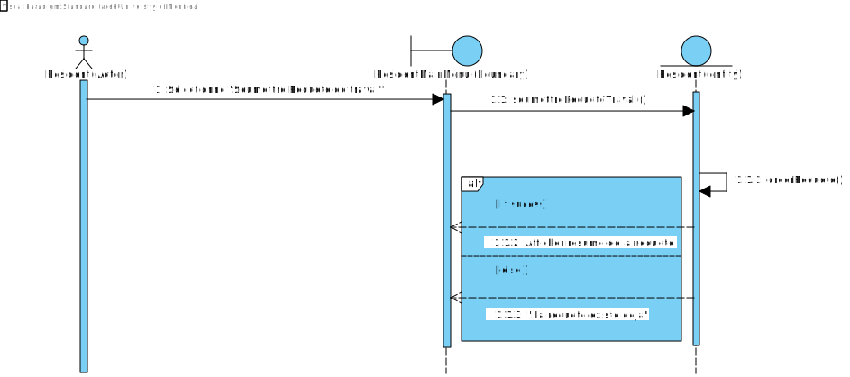
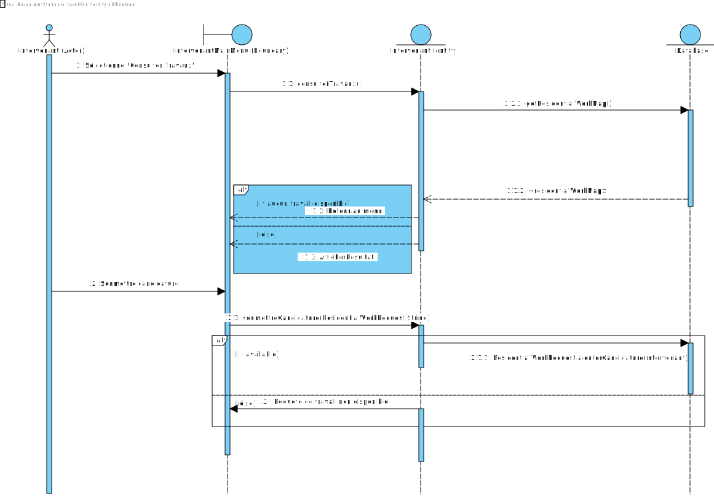

Cadre du projet
Introduction
Le projet "Ma Ville", élaboré par Tarek, Ilyesse et Karim dans le cadre du cours IFT2255 (Génie Logiciel), vise à résoudre les problèmes de communication liés aux travaux publics et privés à Montréal. Actuellement, les résidents se heurtent à des informations fragmentées sur les entraves à la circulation, ce qui engendre frustration et imprévisibilité. Nous proposons donc de développer une application mobile, intitulée "Ma Ville", qui centralisera toutes les informations relatives aux chantiers, y compris les dates, emplacements, et impacts sur la circulation. L'application permettra également aux utilisateurs de signaler des problèmes, d'accéder à un calendrier des travaux, et de recevoir des notifications en temps réel. En favorisant une meilleure collaboration entre la ville, les entreprises et les citoyens, "Ma Ville" a pour objectif d'améliorer la coordination des travaux et de minimiser les désagréments pour les résidents.
Échéancier et répartition des tâches
| Membre | Tâches Assignées (Plus de détails sont disponibles dans les issues) |
|---|---|
| Ilyesse |
|
| Tarek |
|
| Karim |
|
| Équipe |
|
Hypothèses
Cette section présente les hypothèses formulées lors de l'élaboration des exigences et de l'analyse pour le projet Ma Ville. Ces hypothèses guideront le développement et l'évolution de l'application :
- Adoption par les utilisateurs : Nous supposons que les résidents et les intervenants utiliseront régulièrement l'application pour signaler des travaux et consulter des informations.
- Disponibilité des données : Nous partons du principe que les données sur les travaux publics de la ville de Montréal seront accessibles en temps réel.
- Utilisation d'Internet : Nous supposons que tous les utilisateurs cibles auront un accès Internet fiable, leur permettant d'utiliser l'application de manière efficace.
- Interactivité et fonctionnalité : Nous voulons que les utilisateurs trouveront les fonctionnalités de l'application intuitives et faciles à utiliser.
- Satisfaction des utilisateurs : Nous souhaitons que les utilisateurs de l'application soient satisfaits des fonctionnalités et des services fournis.
- Collaboration entre intervenants : Nous croyons que les intervenants publics et privés utiliseront activement l'application pour coordonner les travaux.
- Mises à jour fréquentes : Nous supposons que les données et les informations relatives aux travaux seront régulièrement mises à jour pour garantir leur exactitude.
Exigences
Après de nombreuses rencontres avec le client et une familiarisation avec les activités de recyclage et compostage, nous avons préparé un glossaire rassemblant les termes et expressions clés caractérisant l'environnement.
Glossaire
- Travaux publics
- Projets de construction, de maintenance ou d'amélioration entrepris par les autorités municipales ou gouvernementales pour le bénéfice public, tels que la réfection de routes, l'installation de conduites d'eau ou l'entretien des infrastructures publiques.
- Travaux privés
- Projets de construction ou de développement réalisés par des entreprises privées, des promoteurs immobiliers ou des particuliers, souvent dans le cadre de projets commerciaux ou résidentiels.
- Entraves à la circulation
- Obstacles ou limitations imposées à la circulation des véhicules ou des piétons en raison des travaux en cours, tels que la fermeture de routes, les détours ou les restrictions de stationnement.
- Info entraves et travaux
- Service en ligne de la ville permettant aux résidents de s'informer sur les travaux et les perturbations liés aux infrastructures routières.
- Planification participative
- Processus permettant aux citoyens de contribuer à la prise de décision concernant la planification et l'organisation des travaux dans leur quartier, en fournissant des retours ou en soumettant des demandes.
- Notification personnalisée
- Système de messagerie permettant aux utilisateurs de recevoir des mises à jour spécifiques sur les travaux ou les entraves qui affectent leur secteur géographique ou leurs trajets quotidiens.
- Intervenant
- Entité ou individu, qu’il soit public ou privé, impliqué dans la réalisation, la planification ou la gestion des travaux, incluant les entrepreneurs, les promoteurs immobiliers, et les autorités locales.
- Chantier
- Site où des travaux de construction ou d'amélioration sont en cours. Il peut être temporaire et causer des interruptions dans les services locaux.
- Mobilité urbaine
- Ensemble des modes de déplacement utilisés par les résidents dans une ville, incluant la marche, les vélos, les voitures, les transports en commun, et leur accessibilité.
- Application MaVille
- Application proposée dans le cadre du projet visant à centraliser et améliorer la communication entre les résidents et les intervenants au sujet des travaux publics et privés.
- Flux d’activités
- Séquence d’actions ou d'étapes que suit un utilisateur pour accomplir une tâche dans l'application, souvent représentée par un diagramme d’activités.
- Diagramme de cas d’utilisation (CU)
- Représentation graphique décrivant les interactions entre les utilisateurs (résidents, intervenants) et les fonctionnalités de l’application dans différents scénarios.
- Risques
- Problèmes potentiels susceptibles de survenir au cours de la réalisation du projet ou de l'utilisation de l'application, et pouvant affecter son bon fonctionnement ou son adoption par les utilisateurs.
- Solution de stockage
- Méthode ou technologie utilisée pour conserver et gérer les données recueillies ou générées par l'application, comme les informations sur les travaux, les utilisateurs, ou les notifications.
- Solution d’intégration
- Ensemble des outils ou processus permettant de connecter et de synchroniser l'application avec d'autres systèmes ou services externes, comme les bases de données municipales.
- Requête de travail
- Demande soumise par un résident ou un intervenant pour la réalisation ou la modification d'un projet de travaux dans leur quartier ou zone d'intérêt.
- Signalement
- Fonctionnalité permettant à un utilisateur de rapporter un problème spécifique, comme un chantier non sécurisé ou une entrave non annoncée, directement à la ville ou à l'entreprise responsable.
- Échéancier
- Plan de déroulement des différentes étapes du projet, indiquant les délais et les responsabilités de chaque membre de l’équipe.
- Adresse résidentielle
- Localisation physique d’un résident utilisée pour l’associer à un quartier de Montréal et personnaliser les notifications.
- Authentification
- Processus de vérification des informations d'identification (courriel et mot de passe) pour accéder à l'application en tant que résident ou intervenant.
- Candidature
- Proposition soumise par un intervenant pour réaliser un projet de travaux, en réponse à une requête d’un résident.
- Changement de statut
- Action effectuée par un intervenant pour mettre à jour le statut d’un chantier, comme "Prévu", "En cours", "Suspendu" ou "Terminé".
- Coordination des travaux
- Processus visant à organiser et planifier les projets de travaux afin de minimiser les perturbations pour les citoyens.
- Description du projet
- Information détaillée soumise par un intervenant lors de la création d'un nouveau projet de travaux, incluant son type, ses dates, et les zones affectées.
- Filtre
- Fonctionnalité permettant aux utilisateurs de trier les travaux selon des critères spécifiques, tels que le type, le quartier ou la date.
- Identifiant de la ville
- Code unique à 8 chiffres attribué aux intervenants par la ville pour valider leur inscription à l’application.
- Plages horaires
- Périodes pendant lesquelles les résidents préfèrent que des travaux soient effectués dans leur quartier.
- Quartier
- Secteur géographique de Montréal utilisé pour filtrer ou associer des projets de travaux aux résidents et intervenants.
- Release
- Version stable du projet ou prototype, soumise à la fin du développement. Une "release" officielle doit être faite lors de la remise du projet.
- Prototype
- Première version fonctionnelle de l'application, réalisée dans un cadre limité. Pour ce projet, le prototype se limite à une interaction en ligne de commande, permettant de simuler certaines fonctionnalités de base de l'application.
- Système de stockage
- Solution technique utilisée pour conserver les données relatives aux utilisateurs, aux travaux et aux notifications dans l'application.
- Interface utilisateur
- Ensemble des menus et options affichés aux utilisateurs pour interagir avec l’application. Dans ce projet, elle est limitée à une interface en ligne de commande.
- Risques
- Problèmes potentiels liés à la mise en œuvre ou à l’utilisation de l’application, pouvant inclure des défaillances de sécurité, des bugs, ou une mauvaise adoption par les utilisateurs.
Personas
Cas d'utilisation

1. Choix des acteurs
- Résident :
Il s'agit d'un acteur principal car il représente les utilisateurs finaux qui interagissent avec l'application pour gérer les travaux dans leur quartier. Le résident est impliqué dans des actions comme la soumission de requêtes de travaux, la consultation des travaux en cours ou à venir, et la réception de notifications. Il participe également à la planification participative en proposant des plages horaires pour les travaux.
- Intervenant :
Il s'agit aussi d'un acteur principal. L’intervenant est un acteur clé dans l'exécution des travaux. C'est un utilisateur qui consulte les requêtes de travaux, soumet des candidatures pour les réaliser, et met à jour l’état des projets de travaux. L’intervenant peut être un entrepreneur privé, une entreprise publique ou un particulier.
- Ville de Montréal :
La ville de Montréal est un acteur secondaire qui joue un rôle de validation et de gestion. Elle valide les inscriptions des intervenants et traite les signalements de problèmes soumis par les résidents. La ville n’interagit pas directement avec tous les cas d'utilisation mais a un rôle de supervision et de gestion.
2. Choix des relations
- Include (« Inclure ») :
Cette relation est utilisée lorsque le cas d’utilisation nécessite l’invocation d'un autre cas pour être complété. Par exemple, dans le cas d’utilisation "Se connecter comme résident/intervenant", il inclut "S'inscrire comme résident/intervenant" si l'utilisateur n'a pas encore de compte. Cela garantit que l’utilisateur soit correctement inscrit avant de se connecter.
D’autres cas comme "Signaler un problème à la ville" incluent des sous-cas comme "Traiter les problèmes signalés par les résidents" pour indiquer que la ville doit nécessairement intervenir après le signalement. Finalement, nous avons le cas "Suivre une requête de travaux" qui inclut l'action "Accepter/Refuser la candidature d'un intervenant".
- Extend (« Étendre ») :
La relation d'extension est utilisée lorsque le cas de base peut être enrichi par des fonctionnalités optionnelles. Par exemple, "Consulter les travaux en cours ou à venir" est un cas d’utilisation central, mais il peut être étendu par "Recevoir des notifications personnalisées" qui est une option supplémentaire que le résident peut activer ou non.
De même, "Consulter la liste des requêtes de travaux" pour l’intervenant peut être étendu par "Déposer sa candidature" lorsque l’intervenant choisit de participer à un projet de travaux.
- Généralisation (« Héritage ») :
Dans ce diagramme, la généralisation n’est pas explicitement utilisée, mais aurait pu être utilisée pour illustrer des comportements communs entre certains acteurs ou cas d'utilisation. Par exemple, "S'inscrire" et "Se connecter" pour les résidents et les intervenants sont des cas similaires qui pourraient hériter d'une structure commune.
Ces choix de re lations permettent de modéliser l’interaction de manière claire et modulaire, avec des cas d'utilisation centrés sur les tâches principales et leurs extensions pour les fonctionnalités optionnelles.
SScénarios
Scénario principal
- Le résident ouvre l'application et sélectionne « S’inscrire comme résident ».
- Le système affiche un formulaire d'inscription.
- Le résident remplit les champs requis (nom, date de naissance, courriel, mot de passe, téléphone, adresse résidentielle).
- Le résident soumet le formulaire.
- Le système enregistre les informations et crée un compte résident.
- Le résident reçoit une confirmation d’inscription et est redirigé vers la page de connexion.
Scénarios alternatifs
Scénario principal
- Le résident ouvre l'application et sélectionne « Se connecter comme résident ».
- Le système affiche un formulaire de connexion.
- Le résident entre son adresse courriel et son mot de passe.
- Le système vérifie les informations d'identification.
- Si les informations sont correctes, le résident est connecté et redirigé vers le menu principal.
Scénarios alternatifs
Scénario principal
- Le résident se connecte à l'application.
- Le résident accède au menu principal et sélectionne « Consulter les travaux en cours ou à venir ».
- Le système affiche la liste des travaux en cours et prévus pour les trois prochains mois.
- Le résident filtre la liste si besoin, puis sélectionne un projet.
- Le système affiche les détails du projet sélectionné.
Scénarios alternatifs
Scénario principal
- Le résident se connecte à l’application.
- Le résident accède au menu principal et sélectionne « Recevoir des notifications personnalisées ».
- Le système affiche les paramètres actuels de notifications.
- Le résident modifie ses préférences en fonction de son quartier ou d'une rue spécifique.
- Le résident confirme les modifications.
- Le système enregistre les préférences et envoie des notifications personnalisées basées sur les choix.
Scénarios alternatifs
Scénario principal
- Le résident se connecte à l'application.
- Le résident accède au menu principal et sélectionne « Soumettre une requête de travaux ».
- Le système affiche un formulaire à remplir avec les informations requises (titre, description, type de travaux, date de début espérée).
- Le résident complète et soumet le formulaire.
- Le système enregistre la requête et affiche une confirmation.
Scénarios alternatifs
Scénario principal
- Le résident se connecte à l’application.
- Le résident accède au menu principal et sélectionne « Suivre une requête de travaux ».
- Le système affiche la liste des requêtes soumises par le résident.
- Le résident sélectionne une requête pour voir son statut et les candidatures des intervenants.
- Le résident peut accepter ou refuser une candidature.
- Le résident reçoit des notifications sur l’état d’avancement du projet.
Scénarios alternatifs
Scénario principal
- Le résident se connecte à l’application.
- Le résident accède au menu principal et sélectionne « Signaler un problème à la ville ».
- Le système affiche un formulaire pour signaler un problème.
- Le résident entre les informations (type de problème, description, adresse).
- Le résident soumet le formulaire.
- Le système enregistre le signalement et affiche une confirmation.
Scénarios alternatifs
Scénario principal
- L’intervenant ouvre l’application et sélectionne « S’inscrire comme intervenant ».
- Le système affiche un formulaire d’inscription.
- L’intervenant entre les informations requises (nom, adresse courriel, mot de passe, identifiant de la ville).
- L’intervenant soumet le formulaire.
- Le système enregistre les informations et crée un compte intervenant.
- L’intervenant est redirigé vers la page de connexion.
Scénarios alternatifs
Scénario principal
- L’intervenant se connecte à l’application.
- L’intervenant accède au menu principal et sélectionne « Consulter la liste des requêtes de travaux ».
- Le système affiche la liste des requêtes disponibles.
- L’intervenant applique des filtres si nécessaire, puis sélectionne une requête.
- Le système affiche les détails de la requête sélectionnée.
Scénarios alternatifs
Scénario principal
- L’intervenant se connecte à l’application.
- L’intervenant accède à la liste des requêtes et sélectionne un projet.
- Le système affiche les détails du projet.
- L’intervenant soumet sa candidature en précisant la date de début et de fin des travaux.
- Le système enregistre la candidature et notifie le résident.
Scénarios alternatifs
Scénario principal
- L’intervenant se connecte à l’application.
- L’intervenant accède à la liste des projets de chantier et sélectionne le projet à modifier.
- Le système affiche les détails actuels du projet.
- L’intervenant met à jour la description du projet.
- L’intervenant met à jour la date de fin prévue.
- L’intervenant change le statut du projet (En cours, Suspendu, Terminé).
- L’intervenant enregistre les modifications.
- Le système met à jour les informations et confirme la réussite de la mise à jour.
Scénarios alternatifs
Diagramme d'activités
Diagramme d'activité pour les résidents.

Analyse
Risques
-
Mauvaise adoption par les utilisateurs
Justification : Si les résidents et les intervenants trouvent l'application difficile à utiliser ou qu'elle ne répond pas à leurs besoins, ils risquent de ne pas l'adopter. Cela compromettrait l'efficacité du projet. Par ailleurs, L'introduction de nouvelles fonctionnalités telles que les notifications personnalisées et les préférences de travaux pourrait perturber les utilisateur.
Solution : Concevoir une interface simple, intuitive et accompagnée d'un tutoriel clair. De plus, il serait utile de prévoir une assistance et un support technique pour encourager une adoption rapide et positive. -
Données inexactes ou non mises à jour
Justification : Si les informations ne sont pas mises à jour en temps réel, les utilisateurs risquent de consulter des données erronées.
Solution : Utiliser les APIs en temps réel de la ville de Montréal pour les mises à jour automatiques et des notifications des modifications. -
Problèmes de sécurité des données
Justification : L'application manipule des données personnelles, telles que des noms, des adresses et des courriels. Une faille de sécurité pourrait causer des fuites de données sensibles.
Solution : Utiliser un système de cryptage pour protéger toutes les informations personnelles et effectuer des audits de sécurité réguliers afin d’identifier et de corriger les vulnérabilités. -
Manque de coordination entre les intervenants
Justification : Une mauvaise coordination entre les intervenants publics et privés peut conduire à des chevauchements de projets, ce qui augmente les perturbations pour les résidents.
Solution : La mise en place d'un système de suggestion automatique de créneaux basés sur les préférences et les plages disponibles permettrait de faciliter la planification. -
Complexité technique du déploiement de l’application
Justification : Le projet implique des intégrations API et une infrastructure de support de données volumineuses, ce qui peut augmenter les coûts et compliquer son déploiement.
Solution : Architecture modulaire avec phases de tests itératives et vérifications de performance pour les API et les capacités de notification.
Besoins non-fonctionnels
-
Sécurité des données
L'application devra traiter des informations sensibles et personnelles. Il est donc crucial d'assurer la confidentialité des utilisateurs. -
Performance
L’application doit être capable de répondre rapidement aux demandes, en particulier lorsque les utilisateurs consultent des projets, travaux ou entraves. Des temps de réponse lents pourraient décourager l'utilisation. -
Accessibilité
L’application doit être utilisable par tout le monde, y compris les personnes ayant des limitations physiques ou technologiques. -
Scalabilité
L’application doit pouvoir gérer une augmentation du nombre d'utilisateurs et de requêtes, notamment durant les périodes de travaux intensifs. -
Facilité de maintenance
L’application devra bénéficier de mises à jour continues pour assurer la compatibilité des API de la ville de Montréal et l'ajout de nouvelles fonctionnalités.
Besoins matériels
L’application aura besoin d’une infrastructure serveur capable de supporter plusieurs centaines de connexions simultanées. Un hébergement cloud, comme Google Cloud, est recommandé pour sa scalabilité et ses options de sauvegarde automatique.
Solution de stockage
Actuellement, l’application sera initialisée avec des données de test (plus de 3 résidents, 3 intervenants et 3 requêtes de travail) directement intégrées dans le code pour permettre un démarrage rapide et une simulation de fonctionnement. Toutefois, à long terme, pour gérer les informations des utilisateurs et des projets de manière plus robuste, nous envisagerons l'utilisation d'une base de données relationnelle, comme MySQL.
Solution d'intégration
L’application MaVille doit s’intégrer avec les APIs de la Ville de Montréal pour obtenir des données en temps réel sur les travaux publics et leurs impacts (entraves). L’accès aux données municipales permettra aux résidents d’obtenir des informations actuelles sur les projets en cours ou à venir dans leur quartier. Pour les intervenants privés, un portail dédié sera mis en place au sein de l’application, leur permettant de soumettre directement leurs projets et de les gérer. Cette intégration facilitera la centralisation des informations de travaux et optimisera la coordination entre les acteurs publics et privés.
Conception
Architecture
Pour le projet 'MaVille', nous avons choisi une architecture en couches, plus précisément une architecture de type 3-tier. Cette approche divise les responsabilités en trois couches distinctes : présentation, logique métier et accès aux données. L'architecture en couches permet une séparation claire des préoccupations, favorisant la modularité, la maintenabilité et l'évolutivité du projet. Elle assure également une meilleure répartition des tâches entre les différentes composantes, facilitant ainsi l'ajout de nouvelles fonctionnalités et la collaboration entre les membres de l'équipe.
- Utilisateurs de l'application : Les utilisateurs,résidents comme intervenants, interagissent avec l'application via une interface en ligne de commande. Le système est conçu pour être intuitif, en présentant des menus qui guident l'utilisateur tout au long des différentes opérations disponibles.
- Composantes liées au style d'architecture : Les principales composantes incluent la couche présentation (Menu), la couche logique métier (Resident, Intervenant, ResidentialWorkRequest, etc.), et la couche d'accès aux données (Database). Chaque composante a un rôle spécifique pour assurer une organisation optimale.
- Composantes additionnelles : La classe
Authentificationpermet de gérer les connexions des utilisateurs, garantissant ainsi la sécurité et la confidentialité des données. - Espace de stockage : Le stockage des informations repose sur une base de données implémentée sous forme de
HashMaps, permettant de conserver les données des utilisateurs et des travaux en cours. - Services externes : L'application fait appel à des APIs fournies par la ville de Montréal pour consulter les travaux en cours et les entraves routières.
Décomposition de l'architecture 3-tier
Le choix d'une architecture de type 3-tier permet une séparation claire des responsabilités : la couche présentation, la couche logique métier et la couche accès aux données. Cette stratégie favorise la modularité, la maintenabilité et l'évolutivité de l'application.
Couche Présentation
La couche présentation est représentée par la classe Menu, située dans le package src.com.udem.ift2255.ui.
- Cette classe est chargée d'interagir avec l'utilisateur, en présentant le menu principal et en permettant à l'utilisateur de se connecter en tant que résident ou intervenant.
- Selon le rôle choisi, l'utilisateur est redirigé vers son menu principal spécifique, et peut alors effectuer les actions prévues pour son profil.
- La classe
Menucentralise tous les menus et sert de point d'entrée pour appeler les méthodes associées aux actions que l'utilisateur souhaite effectuer.
Couche Logique Métier
La couche logique métier est constituée des classes suivantes, situées dans les packages src.com.udem.ift2255.model et src.com.udem.ift2255.auth :
- Classe
Resident: Contient les méthodes spécifiques aux résidents, notamment pour accéder à l'API de la ville de Montréal afin de récupérer des informations sur les travaux en cours. - Classe
Intervenant: Implémente les fonctionnalités dédiées aux intervenants, telles que la soumission de rapports et la gestion des travaux. - Classe
ResidentialWorkRequest: Représente les demandes de travaux résidentiels et centralise leur gestion, facilitant ainsi le suivi des requêtes. - Classe
Authentication: Située danssrc.com.udem.ift2255.auth, cette classe gère la vérification des comptes utilisateurs. Elle s'appuie sur les getters de la classeDatabasepour vérifier l'existence des comptes ou en ajouter de nouveaux lors de la création de comptes.
Couche Accès aux Données
La couche accès aux données est assurée par la classe Database, située dans le package src.com.udem.ift2255.database.
- Cette classe contient des structures de données comme des HashMaps pour stocker les objets
Intervenant,Resident, ainsi que les associations entre résidents et leurs demandes de travaux (ResidentialWorkRequest). - Elle gère toutes les interactions avec les données, offrant ainsi une interface fiable pour la couche logique métier, permettant une récupération et une mise à jour efficaces des informations.
Cette architecture en couches permet une organisation claire et une séparation logique des rôles de chaque composant. Elle garantit également une extensibilité future, notamment en facilitant l'intégration d'une interface graphique ou de nouvelles sources de données.
Diagramme de classes
Le diagramme de classes ci-dessous présente une vue simplifiée du système, en omettant les getters, setters, constructeurs, et classes utilitaires. Il inclut des abstractions visant à montrer les relations principales entre les composantes du projet.
Diagrammes de séquence
Les diagrammes de séquence suivants représentent le traitement des principaux cas d'utilisation :
- Consulter les entraves
- Soumettre une requête de travail
- Consulter la liste des requêtes de travail



Justification des choix de conception
Les choix de conception de l'application reposent sur plusieurs principes clés : l'abstraction, le couplage faible, la cohésion forte, et l'encapsulation.
- Abstraction : Chaque classe est désignée pour répondre à une responsabilité bien définie, rendant le code plus lisible et facilitant la compréhension du système global.
- Couplage faible : Les classes sont dépendantes les unes des autres uniquement par le biais d'interfaces publiques et de méthodes d'abstraction, ce qui réduit les interactions complexes et simplifie les modifications.
- Cohésion forte : Les méthodes et attributs de chaque classe sont liés à sa responsabilité principale, augmentant ainsi la pertinence de chaque composant.
- Encapsulation : Les détails d'implémentation sont masqués aux autres composantes du système, assurant une meilleure sécurité des données et une flexibilité dans la modification des comportements internes.
Utilisation du Prototype
Suivez les étapes ci-dessous pour exécuter et tester le prototype de l'application "Ma Ville". Ce prototype est fourni sous forme d'un fichier JAR exécutable. Assurez-vous d'avoir Java installé sur votre machine pour pouvoir le lancer.
1. Téléchargement du Prototype
Téléchargez le fichier .jar depuis notre page des releases GitHub.
Cliquez sur la dernière version stable pour obtenir le fichier JAR.
2. Installation de Java (si nécessaire)
Le prototype nécessite Java 8 ou plus récent. Vérifiez si vous avez Java installé en ouvrant votre terminal et en exécutant la commande suivante :
java -versionSi Java n'est pas installé ou si la version est obsolète, vous pouvez le télécharger et l'installer depuis le site officiel : Télécharger Java.
3. Lancement du Prototype
Une fois Java installé, exécutez le fichier MaVillePrototypeV0.2.0.jar en utilisant la commande suivante dans le terminal ou via l'explorateur de fichiers :
java -jar MaVillePrototypeV0.2.0.jar4. Connexion avec un Compte Test
Utilisez l'un des comptes test suivants pour vous connecter au prototype :
Compte Résident
- Email: resident@prototype.com
- Mot de passe: password123
Compte Intervenant
- Email: intervenant@prototype.com
- Mot de passe: password456
5. Navigation dans le Prototype
Une fois connecté, explorez les fonctionnalités principales du prototype à travers les différents menus selon le type d'utilisateur:
- Menu des résidents & ses fonctionnalités
- Menu des intervenants & ses fonctionnalités
6. Test Final et Validation
Après avoir testé le prototype, nous vous encourageons à signaler tout problème ou suggestion d'amélioration. Créez un rapport de bug ou une demande d'amélioration sur notre dépôt GitHub.
Signaler un problème ou une amélioration